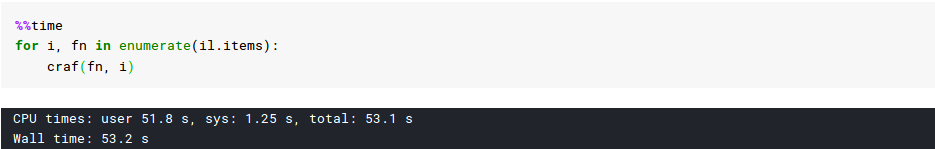
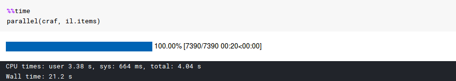

This is a short blog which can help you preprocess your data even faster. Whenever you do machine learning, data may not be available in the form you want to train your models. You need to preprocess it. This may take a lot of time if you have a lot of data and the only solution you can think of is to use multi-processing or multi-threading to make it faster. Now it may seem difficult to do that so fastai comes with a super handy parallel() which can help you with that.
Getting started
Let's see what all we need. Open up your jupyter notebook and type: doc(parallel)
func defines the function that will take your input and do the required stuff, arr defines the list of inputs and max_workers defines the number of workers available on your system. By default, it will use up all your workers.
Example
I will use the same example from the lesson 7 of fast.ai course. Here is our function. The function takes a high-res image and crappifies it to a low-res image.
class crappifier(object):
def __init__(self, path_lr, path_hr):
self.path_lr = path_lr
self.path_hr = path_hr
def __call__(self, fn, i):
dest = self.path_lr/fn.relative_to(self.path_hr)
dest.parent.mkdir(parents=True, exist_ok=True)
img = PIL.Image.open(fn)
targ_sz = resize_to(img, 96, use_min=True)
img = img.resize(targ_sz, resample=PIL.Image.BILINEAR).convert('RGB')
w,h = img.size
q = random.randint(10,70)
ImageDraw.Draw(img).text((random.randint(0,w//2),random.randint(0,h//2)), str(q), fill=(255,255,255))
img.save(dest, quality=q)
Wait, what? It's is not a function, it's a class.
Here is the beauty of python class. You can use a class as a function by defining a __call__ method. Whenever you create an object of this class and call it just like a function it will call the __call__ method. Also, notice that it takes a parameter i which defines the index of your item from the list. You can simply ignore it be replacing it with _ but remember parallel() needs it.
Let's run it with and without the parallel() to see the difference:
# Paths
PATH = untar_data(URLs.PETS)
PATH_HR = PATH/'images'
PATH_LR = PATH/'crappy'
# Data and crappifier object
il = ImageList.from_folder(PATH_HR)
craf = crappifier(PATH_LR, PATH_HR)
Without parallel()

With parallel()

That's it, super easy and super handy. FastAI comes with more cool features that can help you train your models. All thanks to @jeremyhoward and his team.